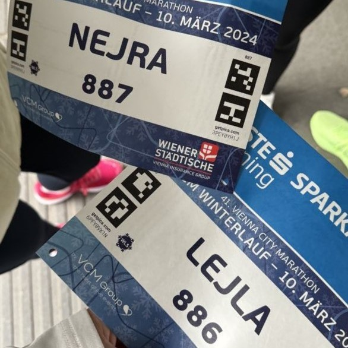
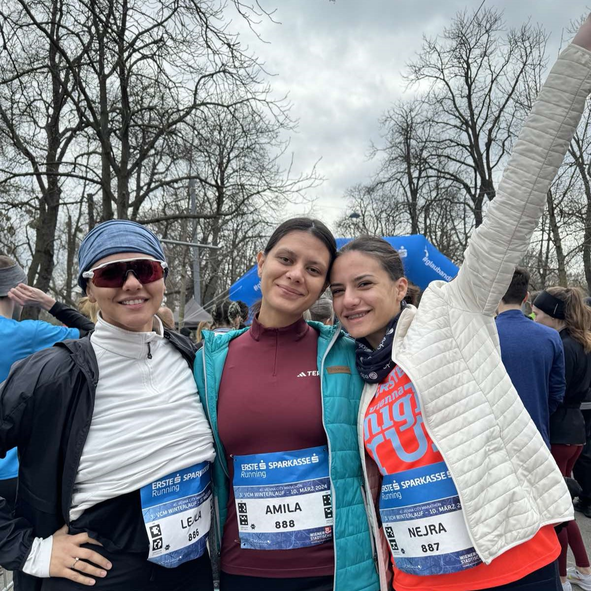
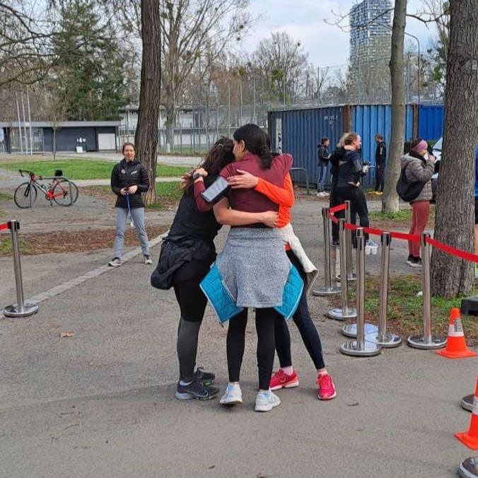
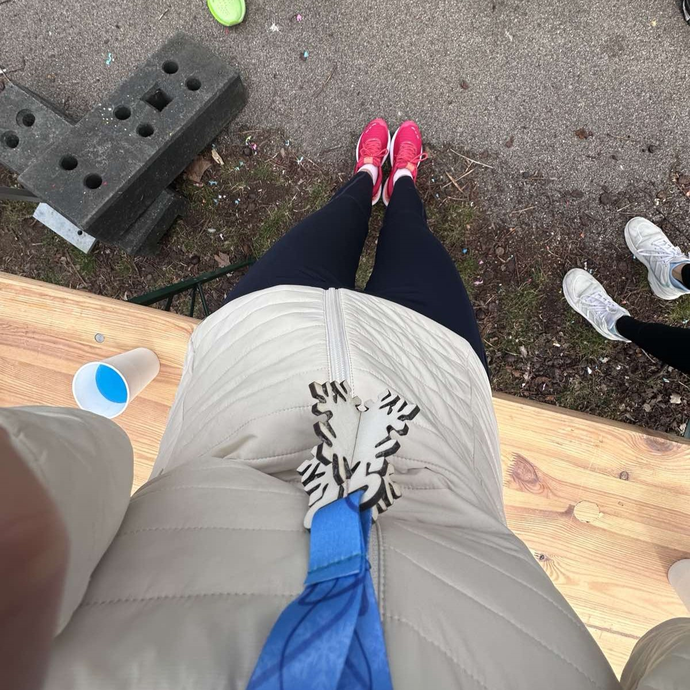
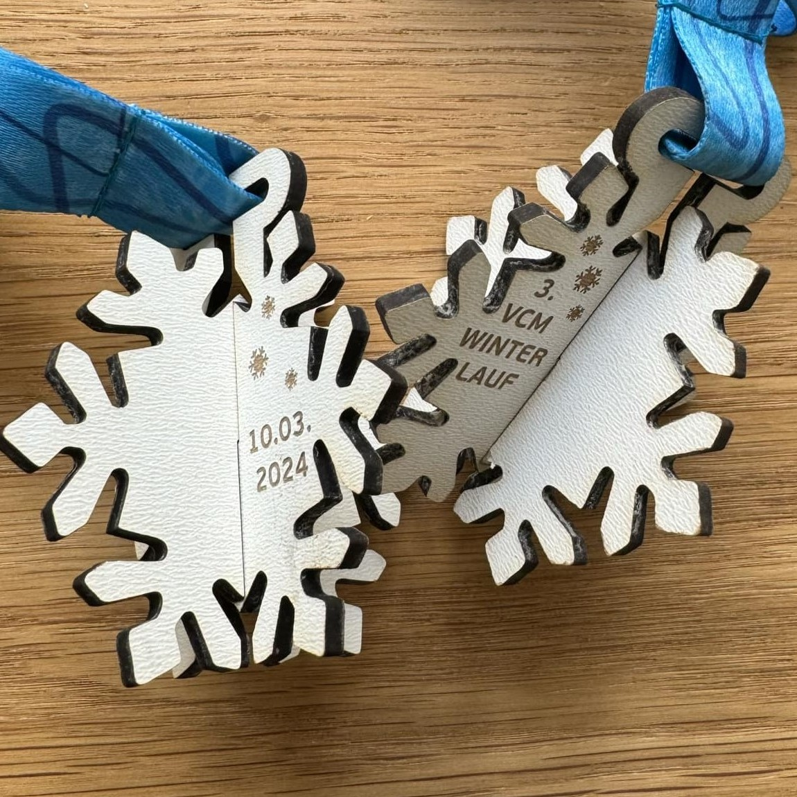
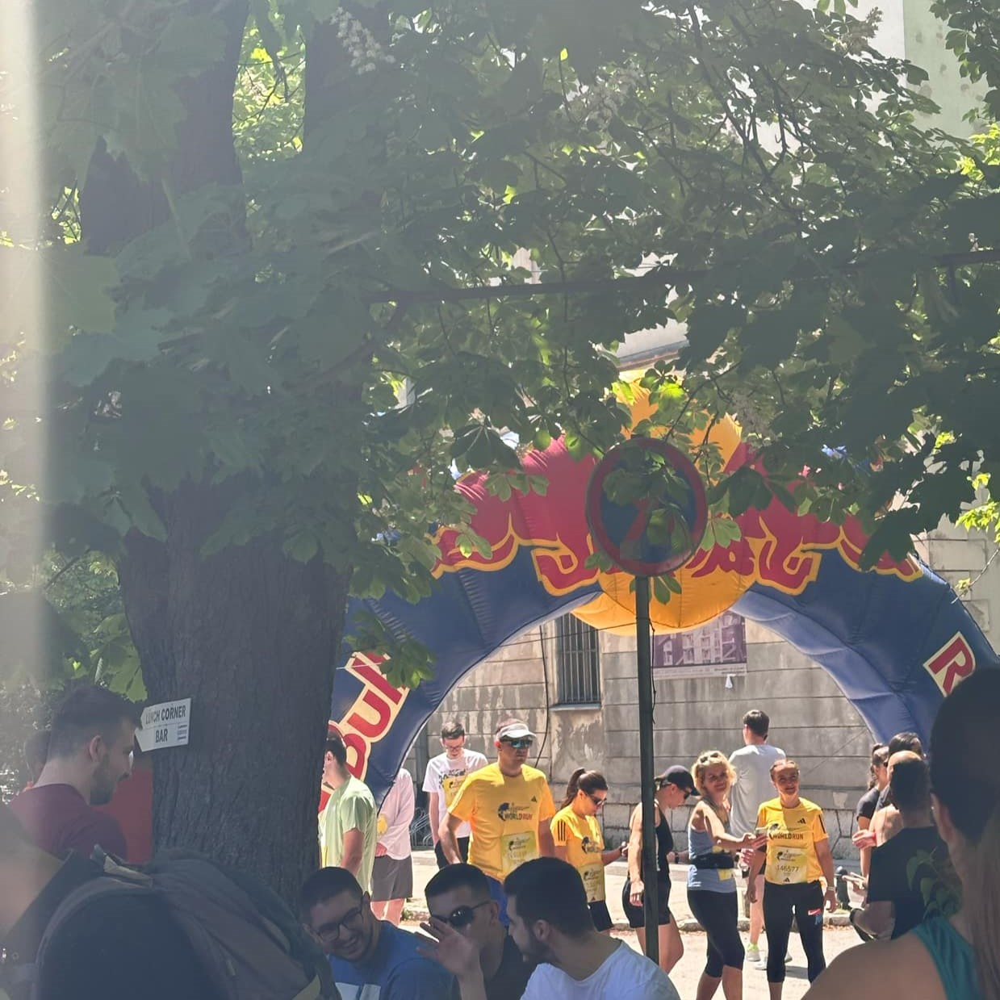
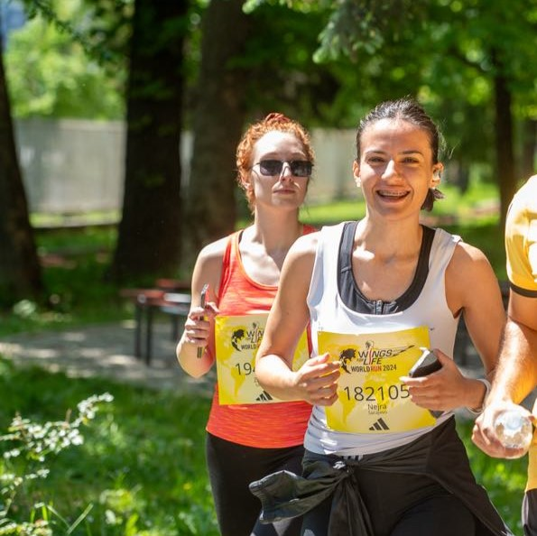
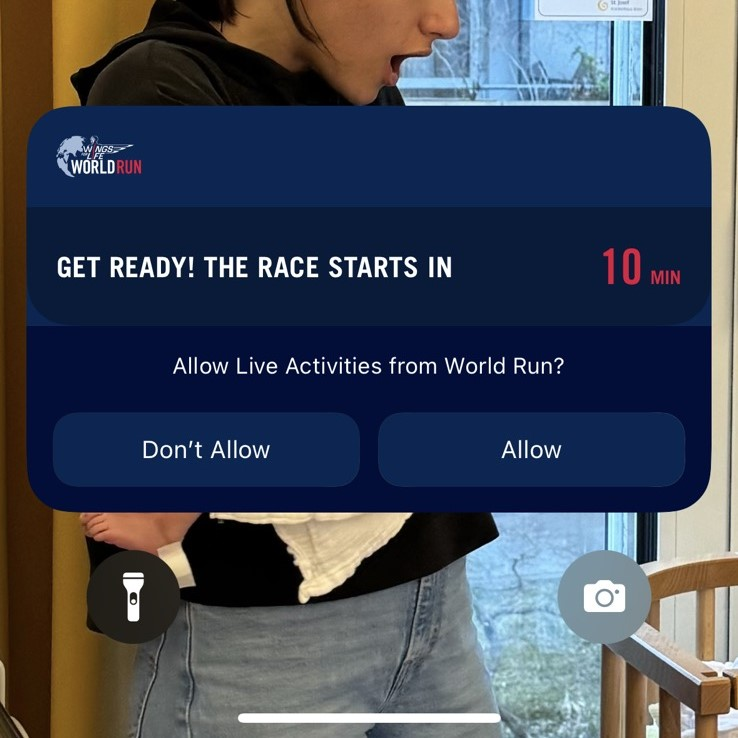
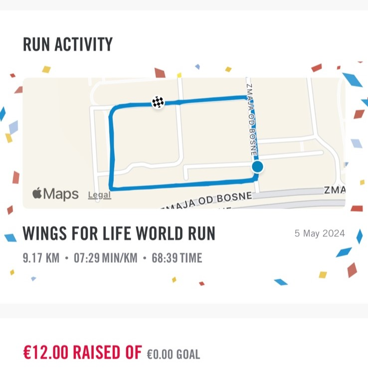
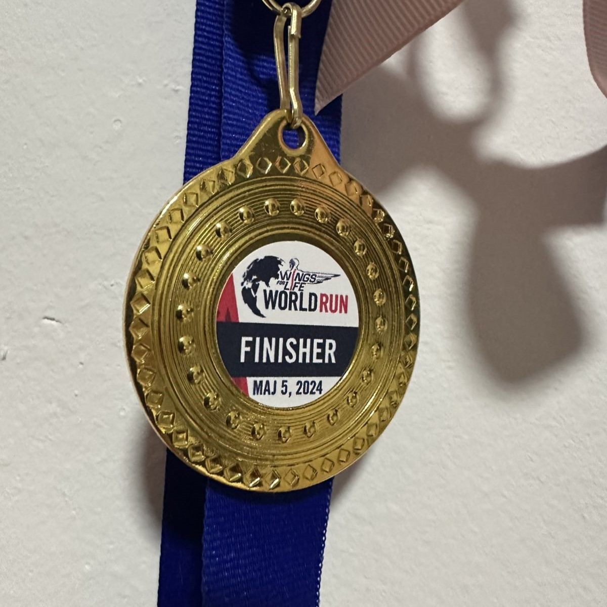

TRČANJE
Jedno od mojih hobija je trčanje. Sa vama ću podijeliti par slika sa utrka na kojim sam sudjelovala.
- Vienna City Marathon
10.03.2024. Beč, Austrija
Takmičarski brojevi

Prije utrke

Poslije utrke

My point of view

Medalja nakon završene utrke
- Wings for Life World Run
05.05.2024. Kampus Univerziteta u Sarajevu, Sarajevo, Bosna i HercegovinaZanimljivost : Wings for Life World Run je globalna humanitarna trka koja se održava svake godine, a njen cilj je prikupiti sredstva za istraživanje i liječenje povreda kičmene moždine. Trka je specifična jer učesnici ne trče prema cilju, već je trka organizovana tako da automobil prati trkače i postepeno povećava brzinu, a trkači moraju trčati sve dok ih automobil ne sustigne.

Mjesto održavanja trke

Slika nastala tokom utrke

Aplikacija prije utrke

Aplikacija nakon utrke

Medalja nakon završene utrke